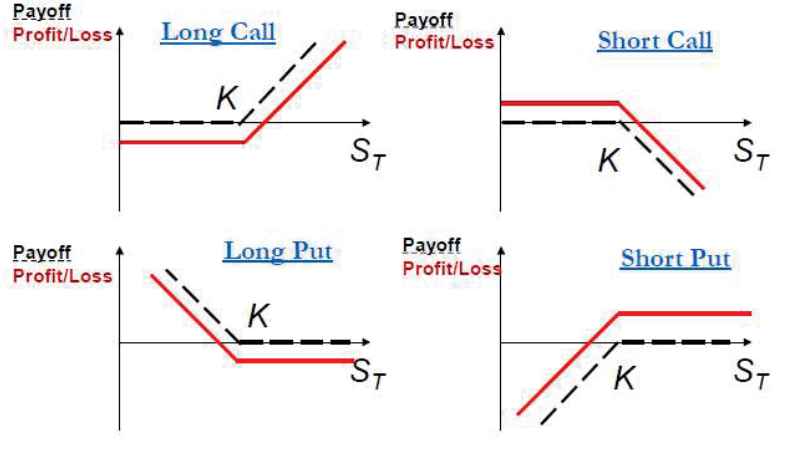

| 数学符号 | 专业定义与经济含义 |
|---|---|
| \( c \) | 欧式看涨期权价格 (European call option price) |
| \( C \) | 美式看涨期权价格 (American call option price) |
| \( p \) | 欧式看跌期权价格 (European put option price) |
| \( P \) | 美式看跌期权价格 (American put option price) |
| \( T \) | 期权到期期限（以年为单位） |
| \( S_0 \) | 当前标的股票价格 (Current stock price) |
| \( S_T \) | 期权到期日标的股票价格 (Stock price at maturity) |
| \( K \) | 执行价格 / 履约价格 (Strike price / Exercise price) |
| \( \sigma \) | 标的股票价格年化波动率 (Volatility) |
| \( D \) | 期权有效期内预期派发红利的贴现现值 |
| \( r \) | 对应期限 \( T \) 的连续复利无风险年利率 |
| 到期股票价格 | 看涨期权多头 | 看涨期权空头 | 看跌期权多头 | 看跌期权空头 |
|---|---|---|---|---|
| \( S_T < 50 \) | \( 0 \) | \( 0 \) | \( 50 - S_T \) | \( S_T - 50 \) |
| \( S_T > 50 \) | \( S_T - 50 \) | \( 50 - S_T \) | \( 0 \) | \( 0 \) |

期权的总市场价格由内在价值（立即行权价值）与时间价值（对未来波动的投机性溢价）两部分构成。时间价值衰减 (\(\theta\)) 呈现严格的非线性与指数加速特征，在距到期最后 30 天内衰减速度急剧加快。
| 执行价格 (\(K\)) | 期权值度 (\(S_0 = \$125\)) | 期权总价格 | 内在价值 | 时间价值 | 到期演化行为 |
|---|---|---|---|---|---|
| $120 看涨期权 | 实值 (ITM) | $8.50 | \( 125 - 120 = \mathbf{\$5.00} \) | $3.50 | 保留 \( \max(S_T - 120, 0) \)；时间价值衰减归零 |
| $125 看涨期权 | 平值 (ATM) | $5.00 | \( \max(125 - 125, 0) = \mathbf{\$0.00} \) | $5.00 (100%) | 拥有最高的时间价值与 Gamma；对波动率变化最敏感 |
| $130 看涨期权 | 虚值 (OTM) | $2.00 | \( \mathbf{\$0.00} \) | $2.00 (100%) | 若 \( S_T \le 130 \)，到期价值将 100% 归零作废 |
| 市场输入变量 | 欧式看涨 (\(c\)) | 欧式看跌 (\(p\)) | 美式看涨 (\(C\)) | 美式看跌 (\(P\)) |
|---|---|---|---|---|
| 当前股票价格 (\(S_0\)) | + | − | + | − |
| 执行价格 (\(K\)) | − | + | − | + |
| 距到期时间 (\(T\)) | ? | ? | + | + |
| 标的价格波动率 (\(\sigma\)) | + | + | + | + |
| 无风险利率 (\(r\)) | + | − | + | − |
| 预期派发红利现值 (\(D\)) | − | + | − | + |
看涨期权价格边界：
看跌期权价格边界：
看涨期权价格边界：
看跌期权价格边界：
| 交易时间节点 | 具体对冲交易动作 | 现金流收支 ($) | 经济目标与结算机理 |
|---|---|---|---|
| 今日 (\(t=0\)) | 融券卖空 1 股 XYZ 股票 买入 1 份欧式看涨期权 存入 8 个月期红利专用存款 \(PV(D)\) 剩余资金存入 10 个月期存款 |
\( +22.50 \) \( -3.00 \) \( -1.43 \) \( -18.07 \) 净投入: $0.00 |
以卖空现货所得资金资助被低估期权的买入。 支付期权报价。 按 7% 复利到期恰好支付 $1.50 红利。 剩余资金 \( 22.50 - 3.00 - 1.43 = \$18.07 \) 赚取利息。 零初始资金投入（完全自融资）。 |
| 第 8 个月 (\(t_d\)) | 收回 8 个月期红利专用存款本息 向股票融券方支付 $1.50 红利 |
\( +1.50 \) \( -1.50 \) 净现金流: $0.00 |
\( \$1.43 e^{0.07 \times 8/12} = \$1.50 \)。 红利支付义务被存款精确完全抵消，无额外现金敞口。 |
| 第 10 个月 (\(T\)) | 收回 10 个月期存款本金与利息 平仓归还融券股票（行权或现货购买） |
\( +19.16 \) \( -\min(S_T, 18.00) \) 净利润: ≥ $1.16 |
\( \$18.07 e^{0.07 \times 10/12} = \mathbf{\$19.16} \)。 若 \( S_T \ge 18 \)，行权按 $18 买入；若 \( S_T < 18 \)，按 \( S_T \) 现货买入。 到期锁定净利润 \( \$19.16 - \$18.00 = \mathbf{\$1.16} \)（现值 $1.09）！ |
| 时间节点 | 对冲交易组合操作 | 现金流收支 ($) | 机制运作与到期结果 |
|---|---|---|---|
| 今日 (\(t=0\)) | 卖出 1 份欧式看涨期权 买入 1 份欧式看跌期权 买入 1 股标的股票 向银行融入 3 个月借款 |
\( +3.00 \) \( -3.00 \) \( -19.00 \) \( +19.00 \) 净投入: $0.00 |
收取高估看涨期权费。 支付看跌期权保护费。 买入被低估的现货股票。 精确借入差额 \( 19 + 3 - 3 = \$19.00 \)。 零初始资金投入！ |
| 第 1 个月 (\(t=1/12\)) | 收取股票分配红利 将红利存入银行计息 2 个月 |
\( +1.00 \) \( -1.00 \) 净现金流: $0.00 |
收到持有股票所享有的现金分红。 按 10% 存入存款，至到期日产生 \( 1.00 e^{0.10 \times 2/12} = \$1.02 \)。 |
| 第 3 个月 (\(T=0.25\)) | 股票按 \( K=\$20 \) 卖出平仓 收回红利存款本息 偿还银行贷款本息 |
\( +20.00 \) \( +1.02 \) \( -19.48 \) 净利润: +$1.54 |
无论 \( S_T \ge 20 \) 或 \( S_T < 20 \)，必定以 $20 卖出股票。 红利本息收回 $1.02。 还款 \( \$19 e^{0.10 \times 0.25} = \$19.48 \)。 锁定净利润 \( 20 + 1.02 - 19.48 = \mathbf{\$1.54} \)（现值 $1.50）！ |
此时是否应当立即行使该看涨期权？
美式看涨价格边界：
美式看跌价格边界：
美式看涨价格边界：
美式看跌价格边界：
提前行权本质上是现金利息收入与下行保险保护价值之间的微观经济权衡。